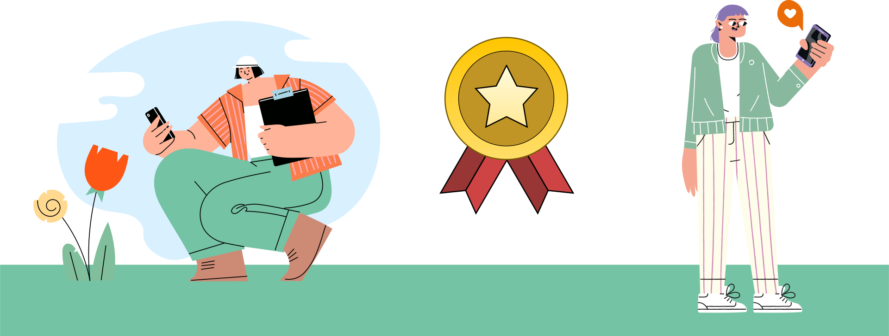
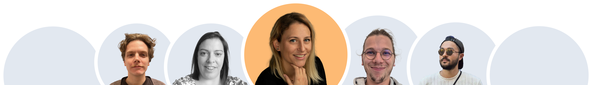

Explorez la Normandie autrement
Découvrez des trésors cachés, collectez des badges, et participez à la préservation de notre patrimoine !
Explorer maintenant →
Découvrez des trésors cachés, collectez des badges, et participez à la préservation de notre patrimoine !
Explorer maintenant →
La Normandie regorge de trésors cachés et de sites moins connus qui ne demandent qu’à être explorés. Grâce à notre application, découvrez ces lieux en fonction de vos centres d’intérêt, tout en contribuant à un tourisme respectueux de l’environnement et bénéfique pour les générations futures.
Plongez dans une expérience visuelle enrichie grâce à notre carte interactive.
Vous choisissez, notre application vous guide. Découvrez des parcours adaptés à vos goûts, à votre rythme.
Rendez votre aventure encore plus fun, gagnez des badges et des trophées pour chaque découverte !
Parcours sonores, immersifs en réalité augmentée, et itinéraires adaptés aux personnes à mobilité réduite.
Vos contributions permettent d'améliorer la gestion des sites touristiques en Normandie.
Si vous souhaitez voir à terme l’évolution du projet, venez visiter notre Trello pour voir les users stories.
En explorant des sites moins fréquentés et en utilisant notre application, qui met à l'honneur les mobilités douces, le faire ensemble et l'accessibilité, vous contribuez à réduire les impacts environnementaux tout en soutenant le patrimoine local. Voyager autrement, c'est préserver le patrimoine, réduire l’impact écologique, et rendre le tourisme accessible à tous.
Les activités éco-responsables réduisent les émissions de CO₂
70 % des revenus du tourisme durable profitent directement aux communautés locales
Diminution de 40 % de la dégradation des sites naturels et historiques grâce à une meilleur gestion des flux touristiques
65 % des voyageurs affirment qu'ils privilégient désormais des expériences immersives respectueuses de l'environnement
Explorez la Normandie avec une carte interactive qui met en lumière les sites naturels, culturels et les événements locaux.
Filtrez les lieux selon vos envies : nature, gastronomie, culture ou activités familiales.
Accédez à des informations détaillées pour chaque site : horaires, avis, itinéraires éco-responsables.
Explorez la carte interactiveChoisissez vos centres d'intérêt : nature, culture, gastronomie ou loisirs. Votre aventure commence ici, à votre image.

Optez pour un moyen de transport respectueux de l'environnement : marche, vélo ou transports en commun.
Immortalisez vos découvertes avec des photos pour garder un souvenir unique de votre parcours.

Sauvegardez et partagez vos itinéraires personnalisés avec vos proches pour les inspirer à voyager autrement.
Transformez vos explorations en une aventure amusante : gagnez des badges pour chaque découverte éco-responsable.
Découvrez des parcours adaptés aux personnes à mobilité réduite avec des options spéciales.
Accédez à des expériences immersives : écoutez des récits historiques ou explorez les lieux en réalité augmentée.
Facilitez votre visite avec des audioguides ou des descriptions détaillées.
Contribuez à un meilleur tourisme en Normandie grâce à vos données anonymes.
Participez à la co-construction d’un tourisme plus intelligent et durable.
Voir le DashboardNotre application détecte les signes de dégradation des lieux touristiques. Ces analyses permettent d’assurer une préservation durable des sites les plus sensibles.
Nos analyses permettent d’optimiser la gestion des flux touristiques en identifiant les périodes de forte affluence et en proposant des alternatives moins fréquentées.
Notre équipe dynamique et talentueuse se compose de Camille, notre cheffe de projet au leadership inspirant, Quentin, un développeur brillant toujours prêt à relever de nouveaux défis, et notre trio de designers UI/UX créatifs : Coralie, Romain, et Arden, qui transforment chaque idée en une expérience visuelle exceptionnelle.
